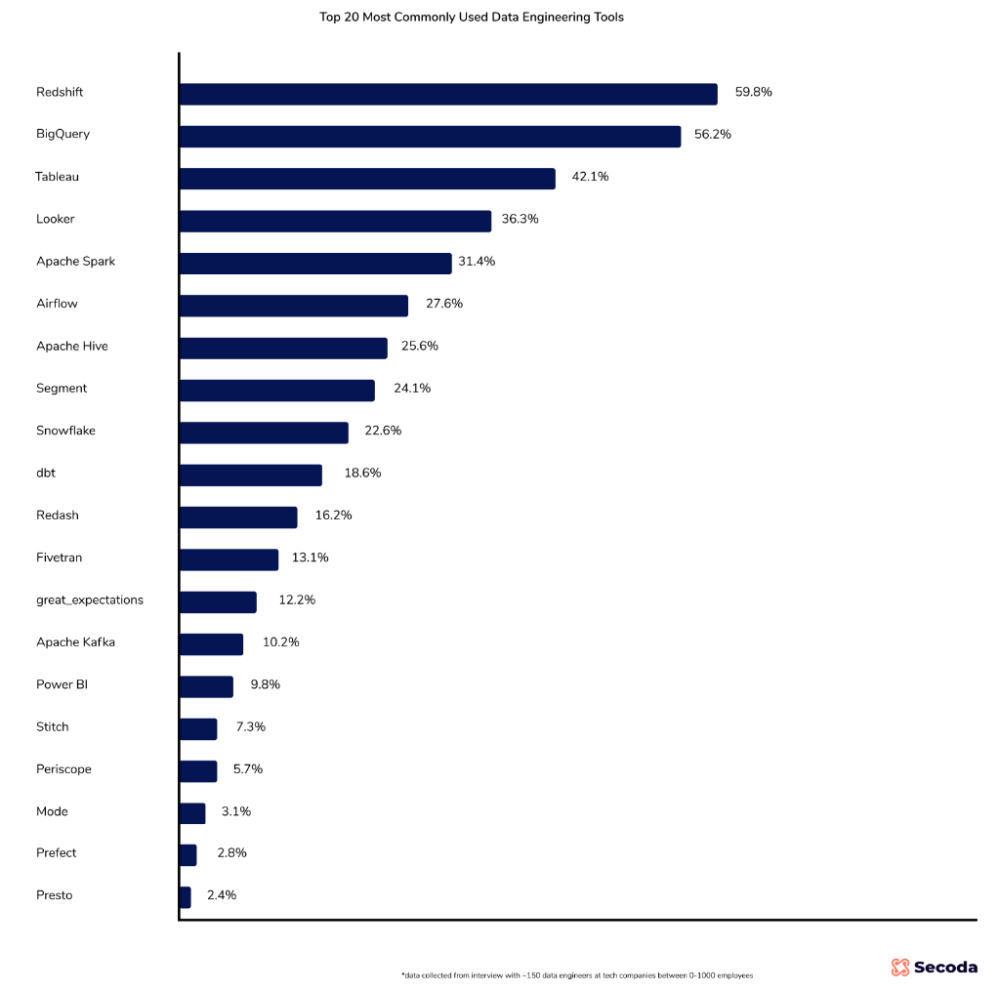

Week 5: Data Engineering
DSAN 6000: Big Data and Cloud Computing
Fall 2025
Agenda
Looking Back
- Introduction to cloud
- Python Multiprocessing
- DuckDB, Polars
Future
- Project introduction
- Spark dataframe, ML, NLP
Today
- Data Engineering
- Data Lakes, Warehouses
- NoSQL Databases
- Lab:
- Athena
- EC2
Data Engineering
What is Data Engineering?
As the scale of the data grew, the existing ETL processes alone were not sufficient, a separate discipline was needed for:
- Collecting data
- Managing storage
- Cataloging
- Making it available for applications such as analytics & machine learning)
- Security
- Lifecycle management
- And more…
From Wikipedia: Data engineering refers to the building of systems to enable the collection and usage of data. This data is usually used to enable subsequent analysis and data science; which often involves machine learning. Making the data usable usually involves substantial compute and storage, as well as data processing and cleaning.
What do Data Engineers do?
Data engineers build systems that collect data from different sources and make this data available for analytics and ML application. This usually involves the following:
- Acquisition: Finding all the different datasets around the business.
- These could be availble in databases, shared drives, ingested directly from IoT devices, external datasets, and more.
- Cleaning: The raw data usually cannot be used as is, it needs to be cleaned.
- Conversion: Since the data is coming from different sources, it would probably in different formats (database tables, CSV, JSON, custom). Needs to be converted into a common format (such as parquet) before it becomes usable.
- Multiple datasets need to be joined together to answer a business question.
What do Data Engineers do (contd.)?
- Disambiguation: How to interpret what the data means? Use a data catalog and then with the help of subject matter experts (often called Data Stewards) add meaningful description to the datasets.
- Deduplication: Having a single source of truth!
- Data Governance: for how long to store the data, how to enforce access controls (Principle of least privilege) etc.
Once this is done, data may be stored in a central repository such as a data lake or data lakehouse. Data engineers may also copy and move subsets of data into a data warehouse.
Data Engineering Tools and Technologies
Data engineers work with a variety of tools and technologies, including:
- ETL Tools: ETL (extract, transform, load) tools move data between systems. They access data, then apply rules to “transform” the data through steps that make it more suitable for analysis.
- SQL: Structured Query Language (SQL) is the standard language for querying relational databases.
- Python: Python is a general programming language. Data engineers may choose to use Python for ETL tasks. Spark (pyspark) for Big Data, Apache Flink for streaming data.
- Cloud Data Storage: Including Amazon S3, Azure Data Lake Storage (ADLS), Google Cloud Storage, etc.
- Cloud Data Warehouses: Data ready for use by data scientists and analysts is stored in data warehouses, such as Amazon Redshift, Google BigQuery, Azure Data Warehouse, Snowflake etc.
Popular Data engineering tools

Data Lakes
{kind=link}
Wikipedia Definition
From Wikipedia: A data lake is a system or repository of data stored in its natural/raw format, usually object blobs or files. A data lake is usually a single store of data including raw copies of source system data, sensor data, social data etc., and transformed data used for tasks such as reporting, visualization, advanced analytics and machine learning. A data lake can include structured data from relational databases (rows and columns), semi-structured data (CSV, logs, XML, JSON), unstructured data (emails, documents, PDFs) and binary data (images, audio, video).
Cloud Provider Definitions
Definitions in the wild (emphasis mine).
AWS
A data lake is a centralized repository that allows you to store all your structured and unstructured data at any scale. You can store your data as-is, without having to first structure the data, and run different types of analytics—from dashboards and visualizations to big data processing, real-time analytics, and machine learning to guide better decisions.
GCP
A data lake provides a scalable and secure platform that allows enterprises to: ingest any data from any system at any speed—even if the data comes from on-premises, cloud, or edge-computing systems; store any type or volume of data in full fidelity; process data in real time or batch mode; and analyze data using SQL, Python, R, or any other language, third-party data, or analytics application.
Azure
Azure Data Lake includes all the capabilities required to make it easy for developers, data scientists, and analysts to store data of any size, shape, and speed, and do all types of processing and analytics across platforms and languages.
DataBricks
A data lake is a central location that holds a large amount of data in its native, raw format. Compared to a hierarchical data warehouse, which stores data in files or folders, a data lake uses a flat architecture and object storage to store the data.
Working with a Cloud Data Lake
A cloud data lake is setup using the cloud provider’s object store (S3, GCS, Azure Blob Storage).
The object stores are extremely scalable, for context, the maximum size of an object in S3 is 5 TB and there is no limit to number of objects in an S3 bucket.
They are extremely duarable, 99.999999999%. Provide strong consistency (read-after-write, listing buckets and objects, granting permissions etc.).
Cost effective, with multiple storage classes.
Integration with data processing tools such as Spark, machine learning tools such as SageMaker, data warehouses such as RedShift and data cataloging tools.
They provide Fine Grained Access Control to the data.
Data Warehouses

From Wikipedia: In computing, a data warehouse (DW or DWH), also known as an enterprise data warehouse (EDW), is a system used for reporting and data analysis and is considered a core component of business intelligence. DWs are central repositories of integrated data from one or more disparate sources. They store current and historical data in one single place that are used for creating analytical reports for workers throughout the enterprise.
Data Warehouse (Cloud Provider Definitions)
Definitions in the wild (emphasis mine).
AWS
A data warehouse is a central repository of information that can be analyzed to make more informed decisions. Data flows into a data warehouse from transactional systems, relational databases, and other sources, typically on a regular cadence. Business analysts, data engineers, data scientists, and decision makers access the data through business intelligence (BI) tools, SQL clients, and other analytics applications.
Azure
A data warehouse is a centralized repository of integrated data from one or more disparate sources. Data warehouses store current and historical data and are used for reporting and analysis of the data.
GCP
A data warehouse is an enterprise system used for the analysis and reporting of structured and semi-structured data from multiple sources, such as point-of-sale transactions, marketing automation, customer relationship management, and more.
Snowflake
A data warehouse (DW) is a relational database that is designed for analytical rather than transactional work. It collects and aggregates data from one or many sources so it can be analyzed to produce business insights.
Working with a Cloud Data Warehouse
All cloud providers provide a data warehouse solution that works in conjunction with their data lake solution.
AWS has Redshift, Azure has Synapse Analytics. GCP has BigQuery and then there is Snowflake.
In a data warehouse, Online analytical processing (OLAP) allows for fast querying and analysis of data from different perspectives. It also helps in pre-aggregating and pre-calculating the information available in the archive.
Data warehouses are Peta Byte scale (Amazon RedShift, Google BigQuery, Azure Synapse Analytics).
Data warehouses can have dedicated compute provisioned or be serverless (BigQuery is serverless, Redshift allows both options now).
Data warehouses now offer integrated ML capabilities, you can build models with SQL and use them in queries (Amazon RedShift ML, Google BigQuery ML, Azure Synapse Analytics ML).
Integration with reporting and dashboarding tools such as Tableau, Grafana, Looker etc. and data analytics tools such as Spark and data cataloging tools.
They provide Fine Grained Access Control to the data.
Combining Data Lakes and Data Warehouses
Combine the flexibility, cost-efficiency, and scale of data lakes with the data management and ACID transactions of data warehouses to provide a single architecture that can enable business intelligence and machine learning on all data.
NoSQL Databases
At some point we needed to think beyond relation databases, because:
- Data became more and more complex (not all data is tabular, thinkin JSON data emitted by an IoT device).
- Cost of storage decreased (everything did not need to be stored in the 3rd normal form)
- More data on the cloud meant data needed to be placed across different servers (scale-out)
- Data needed to be placed intelligently in geo locations of interest
- And more…
From Wikipedia: A NoSQL (originally referring to “non-SQL” or “non-relational”) database provides a mechanism for storage and retrieval of data that is modeled in means other than the tabular relations used in relational databases. Such databases have existed since the late 1960s, but the name “NoSQL” was only coined in the early 21st century, triggered by the needs of Web 2.0 companies. NoSQL databases are increasingly used in big data and real-time web applications. NoSQL systems are also sometimes called Not only SQL to emphasize that they may support SQL-like query languages or sit alongside SQL databases in polyglot-persistent architectures.
Types of NoSQL Databases
Over time, four major types of NoSQL databases emerged: document databases, key-value databases, wide-column stores, and graph databases.
Document databases store data in documents similar to JSON (JavaScript Object Notation) objects. Each document contains pairs of fields and values. The values can typically be a variety of types including things like strings, numbers, booleans, arrays, or objects.
Key-value databases are a simpler type of database where each item contains keys and values.
Wide-column stores store data in tables, rows, and dynamic columns.
Graph databases store data in nodes and edges. Nodes typically store information about people, places, and things, while edges store information about the relationships between the nodes.
Examples of NoSQL Databases
| NOSQL Database Type | Examples |
|---|---|
| Document Database | Amazon DocumentDB, MongoDB, Cosmos DB, ArangoDB, Couchbase Server, CouchDB |
| Key-value Database | Amazon DynamoDB, Couchbase, Memcached, Redis |
| Wide-column datastores | Amazon DynamoDB, Apache Cassandra, Google Bigtable, Azure Tables |
| Graph databases | Amazon Neptune, Neo4j |
As a data scientist you would work with a NoSQL database through an SDK/API. Several programming languages are supported including Python, Java, Go, C++ etc.
Example of documents in a document database
Here is an example of a document inserted in a key-value/document database such as MongoDB.
{
"name" : "IS 350",
"year" : "2015",
"make" : "Lexus",
"colors" : ["black","white","grey"],
"spec" : {
"engine" : "V6",
"wheelbase" : "110.2 in",
"length" : "183.7 in"
}
}The same example can be inserted in an Amazon DynamoDB table called (say) Cars.
Other Data Stores to Know About
Besides the general concepts about data lkakes, warehouses, different types of databases, there are some purpose built databases that are good to know about.
- Splunk
- Elasticsearch
- DuckDB
- Many many more…
Further Reading
Please lookup these topics on Google for further reading. Not providing specific links here because they all point to vendor specific products.
- Data Catalog
- Data Governance
- Data Mesh
- Data Fabric
Diving One Level Deeper: OLTP vs. OLAP
Boar Book Time!
Kleppmann (2017), pages 69-95
Telemetry → Analytics
Recall how many tiny bits of information are streaming into a given app’s servers at any given time!
Database administrators therefore closely guard their OLTP databases. They are usually reluctant to let business analysts run ad hoc analytic queries on an OLTP database, since those queries are often expensive, scanning large parts of the dataset, which can harm the performance of concurrently executing transactions.
Athena for EDA on Raw Data!
What is the Quickest Possible Way to Explore Data in S3?
Lab: Analyzing NYC Taxi dataset with Athena
- A simple example of using DuckDB and Apache Arrow using NYC Taxi dataset
- This notebook reads the NYC taxi dataset files for the first 6 months of the year 2023 (about ~20 million rows) and runs some analytics operation on this dataset. This dataset is too big to fit into memory.
- GitHub Classroom Link for Lab 5
- GitHub Classroom Link for Assignment 5